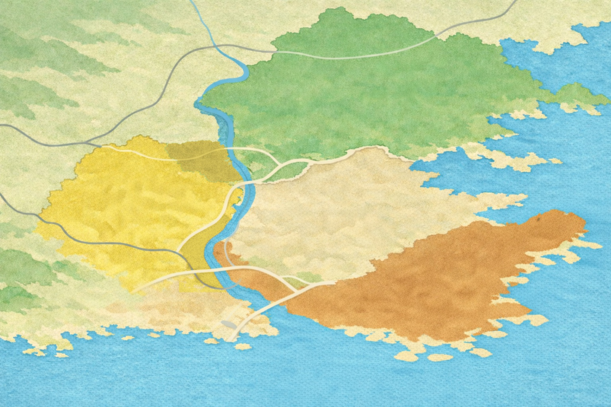
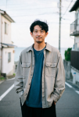
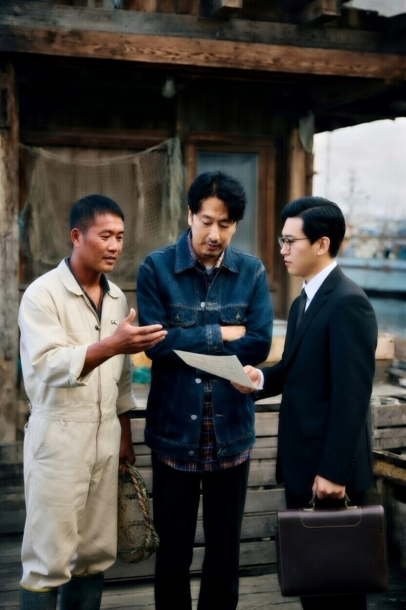

11:00
集合
ごひいきさんから、今日の流れを短く共有します。見どころを回る旅ではなく、この土地の季節の中に少し入る旅であることを伝えます。

ごひいきさんツアー
何度も通ってきた人の目で、この土地の季節と時間に少し入る旅。
このツアーは、何度もこの地域に通ってきたごひいきさんの視点と、地域の方との関係から生まれました。名所を効率よく回る旅ではなく、その土地の季節の手ざわりや、通ってきた人だからこそ好きになった時間を少しずつたどる旅です。
FURUTABIが大切にしている、見物だけではない旅のあり方を、ひとつの形にした企画です。
行程表としてではなく、この二日間でどんな時間を過ごすかが見えるように並べています。
1日目
ごひいきさんから、今日の流れを短く共有します。見どころを回る旅ではなく、この土地の季節の中に少し入る旅であることを伝えます。
梅の木、坂道、風景、風の通り方。何度も通ううちに好きになってきた、この地区の空気を歩きながら味わいます。
地域の方に少し迎えてもらいながら、梅林地区で梅をもぎます。本格的な収穫イベントではなく、その季節の手仕事に少し混ぜてもらうような時間です。
昼食には、今回の梅づくりに参加してくれている方が育てたお米を使います。午前に触れた梅の時間が、お昼ごはんにもつながっていることが自然に感じられるようにしています。
梅シロップや梅干しの最初の工程を少しだけ体験します。余分に採った梅は持ち帰り、家で梅酒や梅シロップにする方法も教えてもらいます。

午後の余韻を持ったまま、宿で少し休みます。急がず、夜の時間へ移るための間もこの旅の一部です。
猫を主役の観光要素として扱いすぎず、町の空気の一部として自然に感じられるようにしています。夕方の光の中で、町のリズムをゆっくり見ます。
一日目に触れた景色や梅の時間を振り返りながら、その土地の夜を静かに味わいます。
希望者だけで、夜景のきれいな場所へ行きます。全員参加のイベントにはせず、行きたい人が静かに出かけるような時間にしています。
2日目
泊まった人だけが味わえる、この土地の朝の特別な時間です。静かな海辺で、夜から朝へ変わる光を見ます。

旅の後半に向けて、ゆっくりとした朝の時間を整えます。
港、畑、店先、仕事場のそばなどで、そのとき無理のない形で少し迎えてもらう時間です。用意された演出ではなく、その土地のふだんの気配に触れていきます。
前日に仕込んだ梅のこと、家での続きの楽しみ、この旅で残った景色のことを少し共有します。
最後まで詰め込みすぎず、少し余白を残したまま二日間を閉じます。
この地域で続いていく時間を、それぞれの暮らしに持ち帰ってもらうところまでがこの旅です。

この地域に何度も通ってきたごひいきさん
海辺の風景や梅林地区の季節の時間に惹かれて、何度もこの地域に通ってきた方です。ただ場所を巡るのではなく、この土地でどう過ごすと心に残るのかを大切にしてきました。
今回のツアーでは、その視点と、地域の方との関係の中で少しずつひらいてきた時間を一緒にたどります。


この旅の中にある梅もぎや仕込みの時間、昼食のお米、地域の方と少し交わる場面は、すべてごひいきさんと地域の方との関係の中から生まれています。
特別な演出として用意されたものというより、この土地で続いてきた季節の時間や、通ってきた人の好きな過ごし方を、少しだけ分けてもらうような旅です。
ただ見るだけではなく、その土地の時間に少し入ってみること。それが、このツアーの魅力です。
このツアーは、ごひいきさん、FURUTABI、観光会社が一緒に内容を考えています。実際のお申し込み受付、旅行代金の収受、当日の運営は、提携する観光会社が行います。
旅の内容や視点は、ごひいきさんとFURUTABIが一緒に組み立てています。見物だけではない旅のあり方が、この企画の土台です。
申込受付、旅行代金の収受、詳細案内は提携する観光会社が担当します。参加条件や旅行条件は申込ページで確認できます。
当日の運営は観光会社が担い、内容の個性や視点はFURUTABIらしく、運営面は安心して参加できる形で整えています。